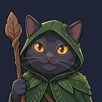
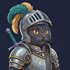

[DATO REAL: nombre del profesor 1]
[DATO REAL: foto, certificación (p. ej. CELTA, TKT), años dando clase y niveles que enseña]
Clases en vivo con profesor, en grupos de máximo 9 o 1 a 1, donde el 80 % del tiempo hablas tú. Para la junta, la entrevista o la certificación que tienes enfrente.
30 preguntas · 15 minutos · resultado al instante · sin crear cuenta
Nada de clases donde el profesor habla y tú tomas notas. Aquí el 80 % del tiempo hablas tú.
Situaciones reales desde la primera sesión: pides, negocias, explicas y discrepas. La gramática aparece cuando la necesitas, no antes.
Audio en cada lección con voces y acentos distintos. Dejas de entender «el inglés del salón» y empiezas a entender el inglés del mundo.
Empiezas con un diagnóstico y avanzas por la escala MCER con evidencia. Siempre sabes en qué nivel estás y qué falta para el siguiente.
Entrevistas, juntas, correos y presentaciones. Practicas el inglés que tu trabajo te va a pedir el lunes, no el de un libro de texto.
Cinco peldaños del Marco Común Europeo. No te saltas ninguno, y en cada uno sabes exactamente qué tienes que poder hacer para pasar al siguiente.
Empiezas desde cero real. Saludas, te presentas, dices de dónde eres y a qué te dedicas, y pides lo básico sin traducir mentalmente cada palabra.
Lo sabes cuando: puedes presentarte y pedir algo en una tienda sin ayuda.
Ya no solo sobrevives: cuentas. Hablas de tu rutina, de lo que hiciste el fin de semana y de lo que vas a hacer, y resuelves un hotel o una cita médica.
Lo sabes cuando: puedes contar lo que hiciste ayer sin trabarte.
El punto de inflexión. Sostienes una conversación completa, explicas por qué piensas algo y empiezas a usar inglés en el trabajo sin que sea un suplicio.
Lo sabes cuando: puedes discrepar y explicar tu razón.
El nivel que piden casi todas las vacantes y casi todas las universidades. Negocias, presentas ante un grupo y sigues una junta al ritmo de los demás.
Lo sabes cuando: puedes llevar una junta entera en inglés.
Dejas de traducir. Matizas, persuades, captas el sarcasmo y el subtexto, y escribes con la precisión que exige un informe o una propuesta seria.
Lo sabes cuando: el idioma deja de ser el tema y solo importa lo que dices.
Antes de pagar tienes derecho a saber con quién vas a hablar dos, tres o cinco veces por semana.
[DATO REAL: foto, certificación (p. ej. CELTA, TKT), años dando clase y niveles que enseña]
[DATO REAL: foto, certificación, años dando clase y niveles que enseña]
[DATO REAL: foto, certificación, años dando clase y niveles que enseña]
[DATO REAL: testimonio 1 con nombre, puesto, ciudad y permiso por escrito. Mejor si dice qué logró: el ascenso, la entrevista o la banda]
[DATO REAL: testimonio 2, mismo formato]
[DATO REAL: p. ej. alumnos que han tomado clase, o bandas IELTS obtenidas este año, con fecha de corte]
Cuatro caminos con el mismo método. Elige por lo que necesitas conseguir, no por el nivel que crees tener.

La ruta completa, de cero a dominio. Las cuatro destrezas en cada sesión y un salto de nivel medido.
Desde
$2,500 MXN / mes
Ver el curso
150 temas para soltar la lengua. Solo conversación: complemento de tu curso o primer paso si tienes poco tiempo.
Precio
[DATO REAL: precio del Club] MXN / mesConsúltalo por WhatsApp
Ver el curso
Juntas, negociación, correos y presentaciones. Para equipos y para quien ya trabaja en inglés.
Desde
$3,000 MXN / mes
Ver el curso
IELTS, Cambridge y TOEFL con estrategia de examen, simulacros cronometrados y meta de banda.
Desde
$3,000 MXN / mes
Ver el cursoPreparamos el examen que necesitas, no «inglés en general». La diferencia entre una banda 6 y una banda 8 casi nunca es vocabulario.
Te preparamos; el examen oficial lo presentas en una sede autorizada.
Sabes en qué banda estás antes de empezar, y qué te separa de la que necesitas.
Cada parte del examen tiene su técnica. Se entrena por separado y se cronometra.
Con reloj, sin pausas y con corrección comentada, para que el día del examen no sea la primera vez.
La parte que más pesa y menos se practica. Aquí se practica todas las semanas.
Arrastra para comparar la misma idea escrita en dos bandas.
Many people think that remote work is good. It has advantages and disadvantages. In my opinion, companies should let people work from home because it is better for them.
Remote work is often framed as a perk, but the evidence points elsewhere: firms that adopted it retained staff longer. The case for it rests less on comfort than on retention.
Pagas mes por mes, sin inscripción y sin permanencia. El curso es lo que aprendes (General, Corporativo, Certificación); el plan es cómo lo tomas. Tu examen de nivel te dice cuál te toca.
Todos los planes incluyen: material del alumno, biblioteca de audio, examen de nivel y entrevista oral con un profesor, gratis y sin compromiso.
El curso completo en grupo: hablar, escuchar, leer y escribir en cada clase.
$2,500 MXN / mes
Unas 20 clases al mes: alrededor de $125 por clase.
Ver el plan Cualquier cursoSolo tú y el profesor. Cada actividad se arma para tu meta y tu horario.
$250–400 MXN / hora
El precio por hora depende de [DATO REAL: de qué depende: nivel, curso u horario].
Ver el plan Corporativo · CertificaciónPara un resultado concreto: una banda, un puesto, una negociación.
$3,000 MXN / mes
Unas 20 sesiones al mes: alrededor de $150 por sesión.
Ver el planCinco clases por semana no es para todos. Hay dos formas de empezar con menos.
Club de Conversación: 2 clases por semana, solo para hablar. [DATO REAL: precio del Club] MXN al mes. Pregunta el precio por WhatsApp.
1 a 1, una hora por semana: de $1,000 a $1,600 al mes según la tarifa por hora, en el horario que tú elijas.
Precios en pesos mexicanos. [DATO REAL: formas de pago y si el precio incluye IVA]. Facturamos a empresas.
Tus clases son en vivo con un profesor. La app es el extra para los días sin clase: lecciones cortas, vocabulario y repaso, con Vesper, nuestro gato, como guía. Es gratis y no hace falta ser alumno para usarla.
Toca un paso para saltar a esa parte del recorrido.
Cada mundo es un nivel del MCER, con su mapa de lecciones, su recinto de vocabulario y un guardián al final. Para pasar al siguiente mundo, lo vences en un duelo.
Lo de todos los días: la casa, la comida, la familia.
Guardián · se vence con 85 %El Centinela del Hogar
La Casa del Hogar · 123 palabras
Sales de casa: el mercado, los planes, lo que hiciste ayer.

Guardián · se vence con 85 %El Guardián del SenderoLa Cueva del Sendero · 118 palabras
Te defiendes solo: viajes, trabajo y opiniones propias.
Guardián · se vence con 85 %El Vigía del Horizonte
El Puerto del Horizonte · 102 palabras
Trabajas en inglés: juntas, argumentos y negociación.
Guardián · se vence con 88 %El Heraldo de la Torre
La Torre del Saber · 102 palabras
Matiz y precisión: ideas abstractas, ironía, escritura seria.
Guardián · se vence con 90 %El Custodio del Firmamento
El Observatorio del Firmamento · 86 palabras
Dominio: el idioma deja de ser el tema.

Guardián · se vence con 92 %El Soberano del SaberEl Castillo del Saber · 85 palabras

Quince minutos, sin crear cuenta y sin compromiso. Sales sabiendo tu nivel y qué curso te toca.
30 preguntas en línea, unos 15 minutos, resultado al instante. Te pide tu correo o tu WhatsApp para mandarte el resultado.
Con tu nivel, el curso que te toca y los horarios que hay.
Gratis y sin compromiso: confirma tu nivel hablando, no solo con un test.
Hablas inglés desde la primera clase.
Déjanos tu WhatsApp y te escribimos con horarios y precios para tu caso.
Usamos tus datos solo para responderte. Lee nuestro aviso de privacidad.
¿Prefieres hablar ya? Escríbenos o llámanos:
Clases en vivo con profesor, en grupos de máximo 9 o 1 a 1, donde el 80 % del tiempo hablas tú. Para la junta, la entrevista o la certificación que tienes enfrente.
30 preguntas · 15 min · resultado al instante · sin crear cuenta
del tiempo de clase hablas tú. La gramática se activa al usarla, no memorizándola.
Toca un nivel para ver su meta.
[DATO REAL: foto, certificación, años dando clase y niveles que enseña]
[DATO REAL: foto, certificación, años dando clase y niveles que enseña]
[DATO REAL: testimonio con nombre, puesto, ciudad y permiso por escrito]
[DATO REAL: alumnos atendidos o bandas obtenidas, con fecha de corte]
Toca una carta para traerla al frente; tócala otra vez para entrar.
El curso completo, de cero a C2: hablar, escuchar, leer y escribir. Plan Grupal o 1 a 1.
150 temas, 2 clases por semana, solo conversación. [DATO REAL: precio del Club] al mes. Pregunta el precio por WhatsApp.
Juntas, correos y negociación. Plan Especializado o 1 a 1.
IELTS, Cambridge y TOEFL con estrategia y simulacros. Plan Especializado o 1 a 1.
Simulacros cronometrados y respuestas modelo Banda 6 vs Banda 8, con la técnica que premian los examinadores. Te preparamos; el examen oficial lo presentas en una sede autorizada.
Mes por mes, sin inscripción ni permanencia. El curso es lo que aprendes; el plan, cómo lo tomas.
Todos incluyen: material, biblioteca de audio, examen de nivel y entrevista oral con un profesor, gratis.
Lo que lo distingue
¿Trabajas de 9 a 7? Empieza con menos: el Club de Conversación (2 clases por semana, [DATO REAL: precio del Club] al mes) o 1 a 1 una hora por semana.
Precios en pesos (MXN). [DATO REAL: formas de pago y si el precio incluye IVA].
Tus clases son en vivo con un profesor. La app es el extra para los días sin clase, con Vesper, nuestro gato, como guía. Gratis, aunque todavía no seas alumno.
Desliza para recorrerlos. Al final de cada uno te espera su guardián.